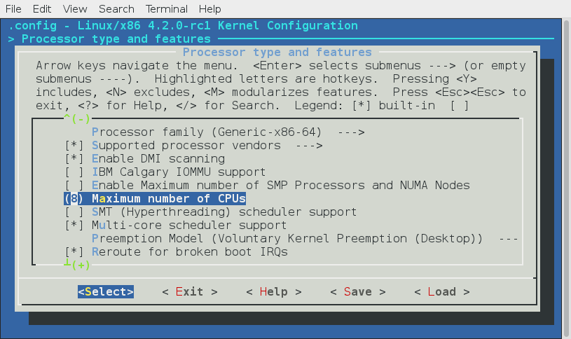

Interrupts and Interrupt Handling. Part 7.
Introduction to external interrupts
This is the seventh part of the Interrupts and Interrupt Handling in the Linux kernel chapter and in the previous part we have finished with the exceptions which are generated by the processor. In this part we will continue to dive to the interrupt handling and will start with the external hardware interrupt handling. As you can remember, in the previous part we have finished with the trap_init function from the arch/x86/kernel/trap.c and the next step is the call of the early_irq_init function from init/main.c.
Interrupts are signal that are sent across IRQ or Interrupt Request Line by a hardware or software. External hardware interrupts allow devices like keyboard, mouse and etc, to indicate that it needs attention of the processor. Once the processor receives the Interrupt Request, it will temporary stop execution of the running program and invoke special routine which depends on an interrupt. We already know that this routine is called interrupt handler (or how we will call it ISR or Interrupt Service Routine from this part). The ISR or Interrupt Handler Routine can be found in Interrupt Vector table that is located at fixed address in the memory. After the interrupt is handled processor resumes the interrupted process. At the boot/initialization time, the Linux kernel identifies all devices in the machine, and appropriate interrupt handlers are loaded into the interrupt table. As we saw in the previous parts, most exceptions are handled simply by the sending a Unix signal to the interrupted process. That's how the kernel can handle an exception quickly. Unfortunately we can not use this approach for the external hardware interrupts, because often they arrive after (and sometimes long after) the process to which they are related has been suspended. So it would make no sense to send a Unix signal to the current process. External interrupt handling depends on the type of an interrupt:
I/Ointerrupts;- Timer interrupts;
- Interprocessor interrupts.
I will try to describe all types of interrupts in this book.
Generally, a handler of an I/O interrupt must be flexible enough to service several devices at the same time. For example in the PCI bus architecture several devices may share the same IRQ line. In the simplest way the Linux kernel must do following thing when an I/O interrupt occurred:
- Save the value of an
IRQand the register's contents on the kernel stack; - Send an acknowledgment to the hardware controller which is servicing the
IRQline; - Execute the interrupt service routine (next we will call it
ISR) which is associated with the device; - Restore registers and return from an interrupt;
Ok, we know a little theory and now let's start with the early_irq_init function. The implementation of the early_irq_init function is in the kernel/irq/irqdesc.c. This function make early initialization of the irq_desc structure. The irq_desc structure is the foundation of interrupt management code in the Linux kernel. An array of this structure, which has the same name - irq_desc, keeps track of every interrupt request source in the Linux kernel. This structure defined in the include/linux/irqdesc.h and as you can note it depends on the CONFIG_SPARSE_IRQ kernel configuration option. This kernel configuration option enables support for sparse IRQs. The irq_desc structure contains many different fields:
irq_common_data- per irq and chip data passed down to chip functions;status_use_accessors- contains status of the interrupt source which is combination of the values from theenumfrom the include/linux/irq.h and different macros which are defined in the same source code file;kstat_irqs- irq stats per-cpu;handle_irq- highlevel irq-events handler;action- identifies the interrupt service routines to be invoked when the IRQ occurs;irq_count- counter of interrupt occurrences on the IRQ line;depth-0if the IRQ line is enabled and a positive value if it has been disabled at least once;last_unhandled- aging timer for unhandled count;irqs_unhandled- count of the unhandled interrupts;lock- a spin lock used to serialize the accesses to theIRQdescriptor;pending_mask- pending rebalanced interrupts;owner- an owner of interrupt descriptor. Interrupt descriptors can be allocated from modules. This field is need to proved refcount on the module which provides the interrupts;- and etc.
Of course it is not all fields of the irq_desc structure, because it is too long to describe each field of this structure, but we will see it all soon. Now let's start to dive into the implementation of the early_irq_init function.
Early external interrupts initialization
Now, let's look on the implementation of the early_irq_init function. Note that implementation of the early_irq_init function depends on the CONFIG_SPARSE_IRQ kernel configuration option. Now we consider implementation of the early_irq_init function when the CONFIG_SPARSE_IRQ kernel configuration option is not set. This function starts from the declaration of the following variables: irq descriptors counter, loop counter, memory node and the irq_desc descriptor:
int __init early_irq_init(void)
{
int count, i, node = first_online_node;
struct irq_desc *desc;
...
...
...
}
The node is an online NUMA node which depends on the MAX_NUMNODES value which depends on the CONFIG_NODES_SHIFT kernel configuration parameter:
#define MAX_NUMNODES (1 << NODES_SHIFT)
...
...
...
#ifdef CONFIG_NODES_SHIFT
#define NODES_SHIFT CONFIG_NODES_SHIFT
#else
#define NODES_SHIFT 0
#endif
As I already wrote, implementation of the first_online_node macro depends on the MAX_NUMNODES value:
#if MAX_NUMNODES > 1
#define first_online_node first_node(node_states[N_ONLINE])
#else
#define first_online_node 0
The node_states is the enum which defined in the include/linux/nodemask.h and represent the set of the states of a node. In our case we are searching an online node and it will be 0 if MAX_NUMNODES is one or zero. If the MAX_NUMNODES is greater than one, the node_states[N_ONLINE] will return 1 and the first_node macro will be expanded to the call of the __first_node function which will return minimal or the first online node:
#define first_node(src) __first_node(&(src))
static inline int __first_node(const nodemask_t *srcp)
{
return min_t(int, MAX_NUMNODES, find_first_bit(srcp->bits, MAX_NUMNODES));
}
More about this will be in the another chapter about the NUMA. The next step after the declaration of these local variables is the call of the:
init_irq_default_affinity();
function. The init_irq_default_affinity function defined in the same source code file and depends on the CONFIG_SMP kernel configuration option allocates a given cpumask structure (in our case it is the irq_default_affinity):
#if defined(CONFIG_SMP)
cpumask_var_t irq_default_affinity;
static void __init init_irq_default_affinity(void)
{
alloc_cpumask_var(&irq_default_affinity, GFP_NOWAIT);
cpumask_setall(irq_default_affinity);
}
#else
static void __init init_irq_default_affinity(void)
{
}
#endif
We know that when a hardware, such as disk controller or keyboard, needs attention from the processor, it throws an interrupt. The interrupt tells to the processor that something has happened and that the processor should interrupt current process and handle an incoming event. In order to prevent multiple devices from sending the same interrupts, the IRQ system was established where each device in a computer system is assigned its own special IRQ so that its interrupts are unique. Linux kernel can assign certain IRQs to specific processors. This is known as SMP IRQ affinity, and it allows you to control how your system will respond to various hardware events (that's why it has certain implementation only if the CONFIG_SMP kernel configuration option is set). After we allocated irq_default_affinity cpumask, we can see printk output:
printk(KERN_INFO "NR_IRQS:%d\n", NR_IRQS);
which prints NR_IRQS:
~$ dmesg | grep NR_IRQS
[ 0.000000] NR_IRQS:4352
The NR_IRQS is the maximum number of the irq descriptors or in another words maximum number of interrupts. Its value depends on the state of the CONFIG_X86_IO_APIC kernel configuration option. If the CONFIG_X86_IO_APIC is not set and the Linux kernel uses an old PIC chip, the NR_IRQS is:
#define NR_IRQS_LEGACY 16
#ifdef CONFIG_X86_IO_APIC
...
...
...
#else
# define NR_IRQS NR_IRQS_LEGACY
#endif
In other way, when the CONFIG_X86_IO_APIC kernel configuration option is set, the NR_IRQS depends on the amount of the processors and amount of the interrupt vectors:
#define CPU_VECTOR_LIMIT (64 * NR_CPUS)
#define NR_VECTORS 256
#define IO_APIC_VECTOR_LIMIT ( 32 * MAX_IO_APICS )
#define MAX_IO_APICS 128
# define NR_IRQS \
(CPU_VECTOR_LIMIT > IO_APIC_VECTOR_LIMIT ? \
(NR_VECTORS + CPU_VECTOR_LIMIT) : \
(NR_VECTORS + IO_APIC_VECTOR_LIMIT))
...
...
...
We remember from the previous parts, that the amount of processors we can set during Linux kernel configuration process with the CONFIG_NR_CPUS configuration option:

In the first case (CPU_VECTOR_LIMIT > IO_APIC_VECTOR_LIMIT), the NR_IRQS will be 4352, in the second case (CPU_VECTOR_LIMIT < IO_APIC_VECTOR_LIMIT), the NR_IRQS will be 768. In my case the NR_CPUS is 8 as you can see in the my configuration, the CPU_VECTOR_LIMIT is 512 and the IO_APIC_VECTOR_LIMIT is 4096. So NR_IRQS for my configuration is 4352:
~$ dmesg | grep NR_IRQS
[ 0.000000] NR_IRQS:4352
In the next step we assign array of the IRQ descriptors to the irq_desc variable which we defined in the start of the early_irq_init function and calculate count of the irq_desc array with the ARRAY_SIZE macro:
desc = irq_desc;
count = ARRAY_SIZE(irq_desc);
The irq_desc array defined in the same source code file and looks like:
struct irq_desc irq_desc[NR_IRQS] __cacheline_aligned_in_smp = {
[0 ... NR_IRQS-1] = {
.handle_irq = handle_bad_irq,
.depth = 1,
.lock = __RAW_SPIN_LOCK_UNLOCKED(irq_desc->lock),
}
};
The irq_desc is array of the irq descriptors. It has three already initialized fields:
handle_irq- as I already wrote above, this field is the highlevel irq-event handler. In our case it initialized with thehandle_bad_irqfunction that defined in the kernel/irq/handle.c source code file and handles spurious and unhandled IRQs;depth-0if the IRQ line is enabled and a positive value if it has been disabled at least once;lock- A spin lock used to serialize the accesses to theIRQdescriptor.
As we calculated count of the interrupts and initialized our irq_desc array, we start to fill descriptors in the loop:
for (i = 0; i < count; i++) {
desc[i].kstat_irqs = alloc_percpu(unsigned int);
alloc_masks(&desc[i], GFP_KERNEL, node);
raw_spin_lock_init(&desc[i].lock);
lockdep_set_class(&desc[i].lock, &irq_desc_lock_class);
desc_set_defaults(i, &desc[i], node, NULL);
}
We are going through the all interrupt descriptors and do the following things:
First of all we allocate percpu variable for the irq kernel statistic with the alloc_percpu macro. This macro allocates one instance of an object of the given type for every processor on the system. You can access kernel statistic from the userspace via /proc/stat:
~$ cat /proc/stat
cpu 207907 68 53904 5427850 14394 0 394 0 0 0
cpu0 25881 11 6684 679131 1351 0 18 0 0 0
cpu1 24791 16 5894 679994 2285 0 24 0 0 0
cpu2 26321 4 7154 678924 664 0 71 0 0 0
cpu3 26648 8 6931 678891 414 0 244 0 0 0
...
...
...
Where the sixth column is the servicing interrupts. After this we allocate cpumask for the given irq descriptor affinity and initialize the spinlock for the given interrupt descriptor. After this before the critical section, the lock will be acquired with a call of the raw_spin_lock and unlocked with the call of the raw_spin_unlock. In the next step we call the lockdep_set_class macro which set the Lock validator irq_desc_lock_class class for the lock of the given interrupt descriptor. More about lockdep, spinlock and other synchronization primitives will be described in the separate chapter.
In the end of the loop we call the desc_set_defaults function from the kernel/irq/irqdesc.c. This function takes four parameters:
- number of a irq;
- interrupt descriptor;
- online
NUMAnode; - owner of interrupt descriptor. Interrupt descriptors can be allocated from modules. This field is need to proved refcount on the module which provides the interrupts;
and fills the rest of the irq_desc fields. The desc_set_defaults function fills interrupt number, irq chip, platform-specific per-chip private data for the chip methods, per-IRQ data for the irq_chip methods and MSI descriptor for the per irq and irq chip data:
desc->irq_data.irq = irq;
desc->irq_data.chip = &no_irq_chip;
desc->irq_data.chip_data = NULL;
desc->irq_data.handler_data = NULL;
desc->irq_data.msi_desc = NULL;
...
...
...
The irq_data.chip structure provides general API like the irq_set_chip, irq_set_irq_type and etc, for the irq controller drivers. You can find it in the kernel/irq/chip.c source code file.
After this we set the status of the accessor for the given descriptor and set disabled state of the interrupts:
...
...
...
irq_settings_clr_and_set(desc, ~0, _IRQ_DEFAULT_INIT_FLAGS);
irqd_set(&desc->irq_data, IRQD_IRQ_DISABLED);
...
...
...
In the next step we set the high level interrupt handlers to the handle_bad_irq which handles spurious and unhandled IRQs (as the hardware stuff is not initialized yet, we set this handler), set irq_desc.desc to 1 which means that an IRQ is disabled, reset count of the unhandled interrupts and interrupts in general:
...
...
...
desc->handle_irq = handle_bad_irq;
desc->depth = 1;
desc->irq_count = 0;
desc->irqs_unhandled = 0;
desc->name = NULL;
desc->owner = owner;
...
...
...
After this we go through the all possible processor with the for_each_possible_cpu helper and set the kstat_irqs to zero for the given interrupt descriptor:
for_each_possible_cpu(cpu)
*per_cpu_ptr(desc->kstat_irqs, cpu) = 0;
and call the desc_smp_init function from the kernel/irq/irqdesc.c that initializes NUMA node of the given interrupt descriptor, sets default SMP affinity and clears the pending_mask of the given interrupt descriptor depends on the value of the CONFIG_GENERIC_PENDING_IRQ kernel configuration option:
static void desc_smp_init(struct irq_desc *desc, int node)
{
desc->irq_data.node = node;
cpumask_copy(desc->irq_data.affinity, irq_default_affinity);
#ifdef CONFIG_GENERIC_PENDING_IRQ
cpumask_clear(desc->pending_mask);
#endif
}
In the end of the early_irq_init function we return the return value of the arch_early_irq_init function:
return arch_early_irq_init();
This function defined in the kernel/apic/vector.c and contains only one call of the arch_early_ioapic_init function from the kernel/apic/io_apic.c. As we can understand from the arch_early_ioapic_init function's name, this function makes early initialization of the I/O APIC. First of all it make a check of the number of the legacy interrupts with the call of the nr_legacy_irqs function. If we have no legacy interrupts with the Intel 8259 programmable interrupt controller we set io_apic_irqs to the 0xffffffffffffffff:
if (!nr_legacy_irqs())
io_apic_irqs = ~0UL;
After this we are going through the all I/O APICs and allocate space for the registers with the call of the alloc_ioapic_saved_registers:
for_each_ioapic(i)
alloc_ioapic_saved_registers(i);
And in the end of the arch_early_ioapic_init function we are going through the all legacy IRQs (from IRQ0 to IRQ15) in the loop and allocate space for the irq_cfg which represents configuration of an irq on the given NUMA node:
for (i = 0; i < nr_legacy_irqs(); i++) {
cfg = alloc_irq_and_cfg_at(i, node);
cfg->vector = IRQ0_VECTOR + i;
cpumask_setall(cfg->domain);
}
That's all.
Sparse IRQs
We already saw in the beginning of this part that implementation of the early_irq_init function depends on the CONFIG_SPARSE_IRQ kernel configuration option. Previously we saw implementation of the early_irq_init function when the CONFIG_SPARSE_IRQ configuration option is not set, now let's look at its implementation when this option is set. Implementation of this function very similar, but little differ. We can see the same definition of variables and call of the init_irq_default_affinity in the beginning of the early_irq_init function:
#ifdef CONFIG_SPARSE_IRQ
int __init early_irq_init(void)
{
int i, initcnt, node = first_online_node;
struct irq_desc *desc;
init_irq_default_affinity();
...
...
...
}
#else
...
...
...
But after this we can see the following call:
initcnt = arch_probe_nr_irqs();
The arch_probe_nr_irqs function defined in the arch/x86/kernel/apic/vector.c and calculates count of the pre-allocated IRQs and update nr_irqs with this number. But stop. Why are there pre-allocated IRQs? There is alternative form of interrupts called - Message Signaled Interrupts available in the PCI. Instead of assigning a fixed number of the interrupt request, the device is allowed to record a message at a particular address of RAM, in fact, the display on the Local APIC. MSI permits a device to allocate 1, 2, 4, 8, 16 or 32 interrupts and MSI-X permits a device to allocate up to 2048 interrupts. Now we know that IRQs can be pre-allocated. More about MSI will be in a next part, but now let's look on the arch_probe_nr_irqs function. We can see the check which assign amount of the interrupt vectors for the each processor in the system to the nr_irqs if it is greater and calculate the nr which represents number of MSI interrupts:
int nr_irqs = NR_IRQS;
if (nr_irqs > (NR_VECTORS * nr_cpu_ids))
nr_irqs = NR_VECTORS * nr_cpu_ids;
nr = (gsi_top + nr_legacy_irqs()) + 8 * nr_cpu_ids;
Take a look on the gsi_top variable. Each APIC is identified with its own ID and with the offset where its IRQ starts. It is called GSI base or Global System Interrupt base. So the gsi_top represents it. We get the Global System Interrupt base from the MultiProcessor Configuration Table table (you can remember that we have parsed this table in the sixth part of the Linux kernel initialization process chapter).
After this we update the nr depends on the value of the gsi_top:
#if defined(CONFIG_PCI_MSI) || defined(CONFIG_HT_IRQ)
if (gsi_top <= NR_IRQS_LEGACY)
nr += 8 * nr_cpu_ids;
else
nr += gsi_top * 16;
#endif
Update the nr_irqs if it less than nr and return the number of the legacy IRQs:
if (nr < nr_irqs)
nr_irqs = nr;
return nr_legacy_irqs();
}
The next after the arch_probe_nr_irqs is printing information about number of IRQs:
printk(KERN_INFO "NR_IRQS:%d nr_irqs:%d %d\n", NR_IRQS, nr_irqs, initcnt);
We can find it in the dmesg output:
$ dmesg | grep NR_IRQS
[ 0.000000] NR_IRQS:4352 nr_irqs:488 16
After this we do some checks that nr_irqs and initcnt values is not greater than maximum allowable number of irqs:
if (WARN_ON(nr_irqs > IRQ_BITMAP_BITS))
nr_irqs = IRQ_BITMAP_BITS;
if (WARN_ON(initcnt > IRQ_BITMAP_BITS))
initcnt = IRQ_BITMAP_BITS;
where IRQ_BITMAP_BITS is equal to the NR_IRQS if the CONFIG_SPARSE_IRQ is not set and NR_IRQS + 8196 in other way. In the next step we are going over all interrupt descriptors which need to be allocated in the loop and allocate space for the descriptor and insert to the irq_desc_tree radix tree:
for (i = 0; i < initcnt; i++) {
desc = alloc_desc(i, node, NULL);
set_bit(i, allocated_irqs);
irq_insert_desc(i, desc);
}
In the end of the early_irq_init function we return the value of the call of the arch_early_irq_init function as we did it already in the previous variant when the CONFIG_SPARSE_IRQ option was not set:
return arch_early_irq_init();
That's all.
Conclusion
It is the end of the seventh part of the Interrupts and Interrupt Handling chapter and we started to dive into external hardware interrupts in this part. We saw early initialization of the irq_desc structure which represents description of an external interrupt and contains information about it like list of irq actions, information about interrupt handler, interrupt's owner, count of the unhandled interrupt and etc. In the next part we will continue to research external interrupts.
If you have any questions or suggestions write me a comment or ping me at twitter.
Please note that English is not my first language, And I am really sorry for any inconvenience. If you find any mistakes please send me PR to linux-insides.